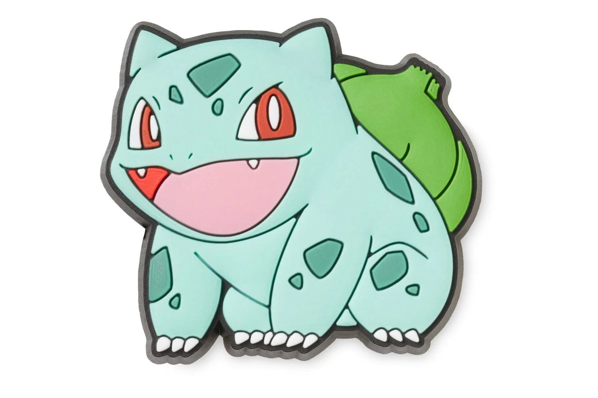
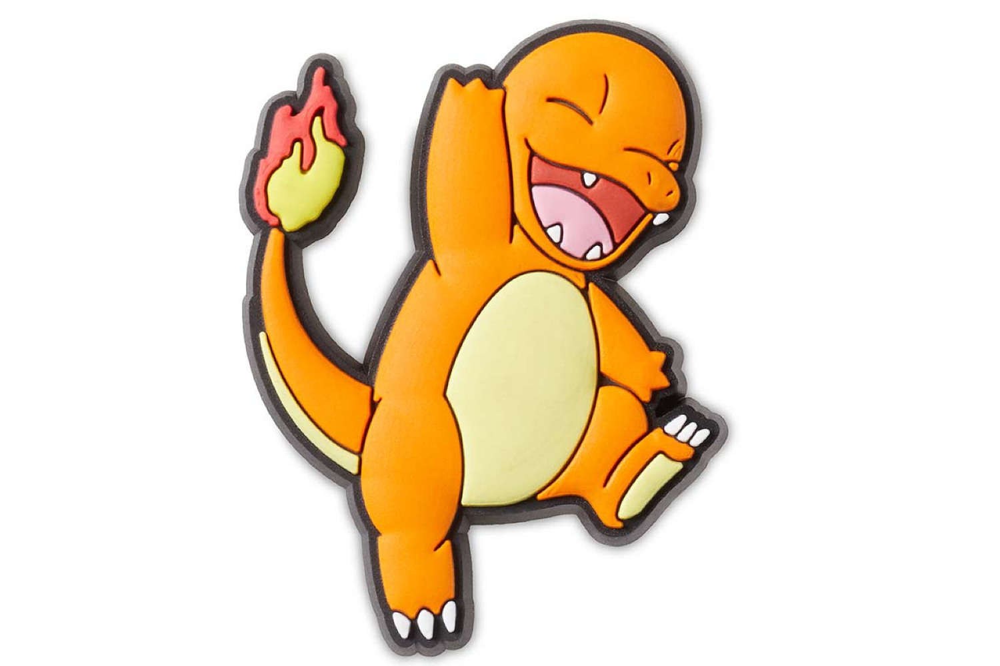
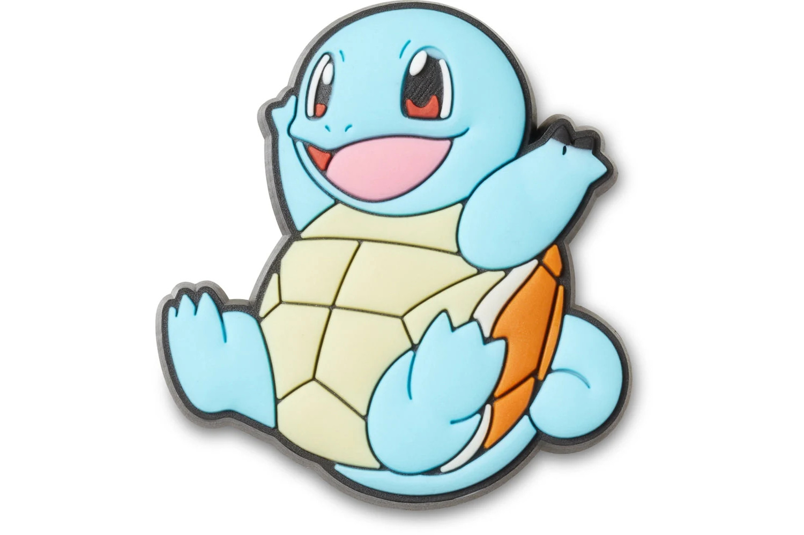

Bulbasaur es un Pokémon de tipo planta/veneno que se reconoce fácilmente por la semilla en su espalda. Este bulbo crece con él y le permite absorber energía solar, dándole vitalidad y habilidades únicas.

Charmander es un Pokémon de tipo fuego con la apariencia de un pequeño lagarto naranja. Se distingue por la llama que arde en la punta de su cola, la cual refleja su energía vital.

Squirtle es un Pokémon de tipo agua con forma de tortuga azul de caparazón resistente. Su gran habilidad es lanzar potentes chorros de agua con precisión, tanto para defenderse como para atacar.